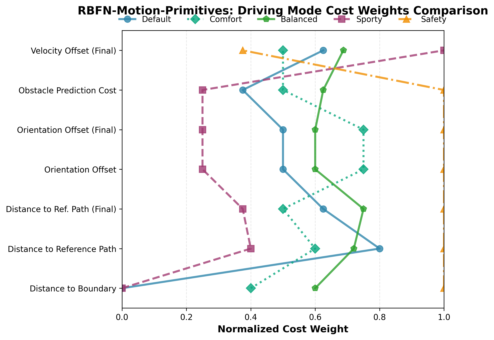

PlannerForge: LLM Agents for Scenario-Based Testing of Motion Planners in Autonomous Driving
An LLM-agent framework that unifies all eight scenario-based-testing stages for autonomous-driving motion planners under a single chatbot-driven interface.
Yuan Gao1, Sebastian Müller1, Mattia Piccinini1, Marc Kaufeld1, Yuchen Zhang1, Finn Rasmus Schäfer1, Qunying Song2, Johannes Betz1
1Professorship of Autonomous Vehicle Systems, TUM School of Engineering and Design, Technical University of Munich, 85748 Garching, Germany; Munich Institute of Robotics and Machine Intelligence (MIRMI) 2University College London, London, United Kingdom
The PlannerForge framework. A chatbot-driven interface routes user intent across the full testing pipeline, unifying the six Riedmaier stages with two LLM-era stages. Click the figure to enlarge.
1Scenario Source
2Generation
3Database
4Selection
5Test Execution
6ADS Assessment
+ADS Enhancement
+ADS Benchmarking
Stages 1–6 follow the Riedmaier scenario-based-testing taxonomy; + marks the two LLM-era stages introduced by PlannerForge.
What's New
Key Contributions
End-to-end LLM framework. To our knowledge the first framework to unify all six Riedmaier scenario-based-testing stages together with two LLM-era stages (ADS Enhancement, ADS Benchmarking) in a single chatbot-driven pipeline.
Empirical evaluation. Ten off-the-shelf LLM backends (five commercial, five open-source; reasoning and non-reasoning) across the five core framework tasks under five prompt conditions — without any domain-specific fine-tuning.
Cross-planner benchmark. A multi-planner interface (Frenetix and MP-RBFN) for comparative evaluation on framework-generated and -modified scenarios.
Overview
Abstract
Ensuring autonomous-driving safety is a critical challenge. Scenario-based testing is the systematic process used to validate autonomous-driving systems (ADS), but it remains a fragmented modular pipeline in which scenario generation, retrieval, modification, ADS execution, and result analysis are performed by separate tools with little interaction. LLM agents have shown promise across ADS sub-systems such as perception, planning, and control; however, to our knowledge no prior work covers this scenario-based testing pipeline for ADS as a single LLM-agent framework. We present PlannerForge, an LLM-agent framework that extends all six scenario-based-testing stages (Scenario Generation through ADS Assessment) with two further LLM-era stages, ADS Enhancement and ADS Benchmarking, and integrates two open-source motion planners (Frenetix and MP-RBFN) under a unified interface. We evaluate PlannerForge with ten off-the-shelf LLMs across the five framework tasks under five prompt conditions; best-per-task scores reach 0.88–1.00, with open-source 20–35B backends matching commercial APIs on most tasks. Three chatbot-driven qualitative workflows further demonstrate end-to-end coverage: an LLM-driven scenario modification with a measurable safety-criticality shift, a cost-tuning loop that lifts a motion planner's success rate from 38.0% to 63.2%, and a single-prompt cross-planner batch comparison; together they show that PlannerForge can be driven by off-the-shelf LLM agents without domain-specific fine-tuning.
Seven natural-language workflows, driven end to end through the PlannerForge chatbot. Follow the pipeline in order — generate a scenario from a text query or from a map input, select one from the database, modify it, execute it in the motion planner under test, assess the results, then enhance the planner — or jump to any step.
Evaluation
Results
Per-task performance. Best-per-task scores reach 0.88–1.00, with open-source 20–35B backends matching commercial APIs on most tasks.
Generation. GLM-5 with cp·cot reaches 0.957 (+0.174 over its bare baseline) — context prompting plus chain-of-thought nearly saturates intent parsing.
Selection — the hardest task. Qwen3.6-plus with cp·cot achieves 0.880 joint slot satisfaction, up from a 0.180 baseline (+0.700); the strict five-stage filter fails if any extracted slot is wrong.
Modification. Qwen3.6-plus with cp·icl·cot reaches ≈100% on the headline checks of all four sub-tasks (Trajectory, Behaviour, Population, Goal).
Open beats expectations. Open-source 20–35B models match commercial APIs on most tasks — Qwen3.6:35B matches them on three of the five.
Cost-tuning loop. An LLM-driven cost-tuning workflow lifts Frenetix's success rate from 38.0% → 63.2% on the same scenario set.
Safety-criticality shift. LLM-driven scenario modification produces a measurable shift in scenario safety-criticality (behaviour-task edit).
Single-prompt batch comparison. One prompt drives a full cross-planner batch: Frenetix 67% success at 8.4 s/scenario vs MP-RBFN 50% at 7.6 s.
Cross-planner — Frenetix.

Cross-planner — MP-RBFN.
Under the Hood
Prompts
Every framework task is driven by off-the-shelf LLMs under five prompt conditions — a cumulative ablation from a minimal baseline up to the full cp·icl·cot. Pick a task, a prompt component, and two conditions to see exactly what each layer adds.
cp · Context Prompt
Adds task context — the full role, output schema, and constraints — on top of the minimal baseline directive.
icl · In-Context Learning
Few-shot worked examples (input → expected output) appended to the prompt so the model imitates the target format.
cot · Chain-of-Thought
Explicit step-by-step reasoning guidance before the final answer, to improve accuracy on harder cases.
Each task is driven by one or more system-prompt components, and every component exists in all 5 conditions.
Task
Prompt components
× Conditions
Prompts
Generation
osm_intent1
5
5
Selection
locationobstaclesroad_nettagsvelocity5
5
25
Modification — T
manipulation_trajectorynet_analysis2
5
10
Modification — B
manipulation_behaviornet_analysis2
5
10
Modification — G
goal_extraction1
5
5
Modification — P_add
manipulation_addnet_analysis2
5
10
Modification — P_remove
manipulation_removenet_analysis2
5
10
Planner Enhancement
planner_param1
5
5
Module Router
module_router1
5
5
Total
17 components
×5
≈85
The modules these prompts drive
LLM-era modules (Enhancement & Benchmarking)↔two-way: the router calls a module and receives its result, then re-routes
added in Compareonly in Base
Base
Compare
Loading prompts…
Cite
BibTeX
@inproceedings{gao2026plannerforge,
title = {PlannerForge: LLM Agents for Scenario-Based Testing of
Motion Planners in Autonomous Driving},
author = {Gao, Yuan and M{\"u}ller, Sebastian and Piccinini, Mattia and
Kaufeld, Marc and Zhang, Yuchen and Sch{\"a}fer, Finn Rasmus and
Song, Qunying and Betz, Johannes},
booktitle = {Proceedings of the 2026 Conference on Empirical Methods in
Natural Language Processing (EMNLP)},
year = {2026},
address = {Budapest, Hungary},
note = {Code and data:
https://github.com/TUM-AVS/PlannerForge}
}
Accepted to the EMNLP 2026 Main Conference. Code and data will be released at github.com/TUM-AVS/PlannerForge; the code upload is still in progress.